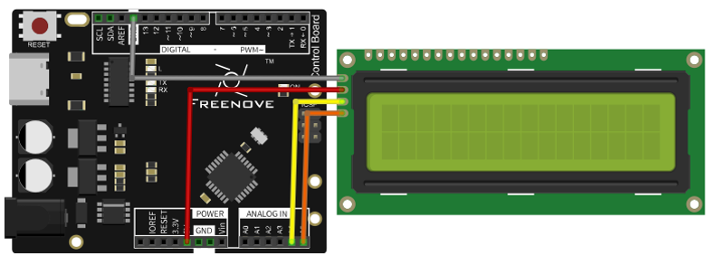

Wire an I2C LCD1602 display, print a greeting, and show a seconds counter on its second row.
Gather the parts
Uno-compatible board and USB cable
I2C LCD1602 module (the kind with a four-pin I2C backpack)
4 male-to-male jumper wires
Breadboard, only if it helps hold the display safely
Before you start: this lesson is for an I2C LCD1602, not a bare 16-pin LCD. Look for four display pins, usually labeled GND, VCC, SDA, SCL. Use USB power only. Keep the board on a dry, non-metal table; unplug USB before moving a wire; and never force a connector or connect the display to mains power.
Build it, one check at a time
Step 1 — Read the tiny screen
LCD1602 means this display has 16 character spaces across and 2 rows. The I2C backpack turns the many LCD connections into four useful pins. Power uses VCC and GND; I2C messages use SDA (data) and SCL (clock). Do not confuse SDA and SCL with ordinary numbered digital pins.

Reference circuit image: Freenove, Chapter 16, Project 16.1, I2C LCD1602 circuit connection. Reused unchanged under CC BY-NC-SA 3.0; source page linked in Reference pages.
Step 2 — Wire power first
With USB unplugged, connect LCD VCC → Arduino 5V and LCD GND → Arduino GND. Match the printed labels, not a wire color. A reversed power connection can damage a module, so stop and correct any uncertain wire before plugging USB back in.
Step 3 — Add the two I2C signal wires
On a classic Uno-compatible board, connect LCD SDA → Arduino A4 (SDA) and LCD SCL → Arduino A5 (SCL). Some Uno-style boards also provide duplicate SDA/SCL pins beside AREF; those are connected to the same I2C bus. Use only one matching pair. The four completed paths are VCC-to-5V, GND-to-GND, SDA-to-A4, and SCL-to-A5.
Pause: the source diagram labels the controller’s I2C lines. If your board is not Uno-compatible, find its documented SDA and SCL pins instead of assuming A4 and A5.
Step 4 — Add the LCD library
The Freenove reference sketch uses LiquidCrystal_I2C. In Arduino IDE choose Sketch → Include Library → Add .ZIP Library… and select Freenove’s supplied LiquidCrystal_I2C.zip, or use the library supplied for your exact kit. Then reconnect USB and choose the board and port.
Many I2C LCD backpacks use address 0x27; the Freenove example checks it and switches to 0x3F when 0x27 does not answer. That is why the sketch below contains both addresses. Do not guess at random addresses when a display is blank—check power, contrast, wiring, and your module’s documentation first.
Step 5 — Upload your first screen message
Upload this original greeting-and-counter sketch, based on the source’s address check, 16×2 setup, backlight, cursor, and seconds-counter behavior. The cursor coordinates start at zero, so lcd.setCursor(0, 1) means the first character of the second row.
What success looks like: the backlight turns on, the first row says HELLO, MAKER!, and the second row counts upward. If the backlight is on but words are missing, gently turn the tiny contrast screw on the back of the I2C backpack a little at a time with USB unplugged. If nothing lights, unplug USB and recheck VCC/GND before trying again. A screen message is for learning, not for safety alerts or anything that must be read correctly in an emergency.
Tiny challenge
Change the greeting to a message of 16 characters or fewer. Then change the cursor to lcd.setCursor(4, 1). Where does the counter begin? Explain why the second row has number 1, not 2.
The local reference image is an unchanged Freenove Chapter 16 circuit image used under the upstream CC BY-NC-SA 3.0 license with attribution. The learner-facing explanation and greeting code are original. Technical choices were checked against the retained Freenove source pack and the public Chapter 16 page.